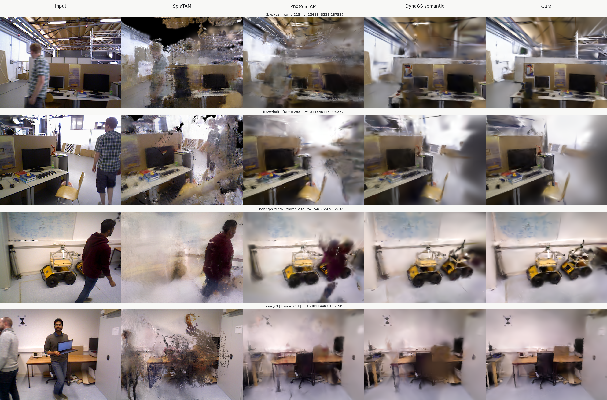

FlowParse-SLAM-style quantitative tables
A table-first HTML rendering following the structure of FlowParse-SLAM.tex. Source-reported baselines and local GDOR evidence are deliberately separated.
Table I. Camera tracking
ATE RMSE and temporal Std. (cm) on dynamic TUM RGB-D; lower is better. The layout mirrors the four-sequence comparison table in the supplied TeX.
Source boundary: the upper rows are source-reported comparison context; the GDOR row is a three-seed local DYN-19 sequence mean and has no local temporal-Std export yet.
Table II. Module ablation
FlowParse mechanism context. This reproduces the compact MR/SC/Motion/Fusion layout from the supplied TeX.
These rows are context from the supplied FlowParse draft, not DYN-19 measurements.
DYN-19 ordered ablation
Local mechanism ledger. The configuration order and factor route are shown without claiming factorial effects.
Design boundary: adjacent bundle contrasts do not identify independent effects or interactions.
Table III. Runtime
Runtime on TUM fr3/w/xyz. The structure follows the supplied Track / Map / FPS / Seq. time table.
Runtime boundary: external rows are source-reported on different hardware. DYN-19 currently exports full-sequence end-to-end wall time, not the exact per-stage breakdown.
Figure. Qualitative static mapping comparison
Same figure structure as fig:mapping-qualitative in the supplied TeX. Four dynamic RGB-D scenes are arranged as rows; columns show input, SplaTAM, Photo-SLAM, mask-only suppression, and FlowParse-style output.

fr3/w/xyz and fr3/w/half, and Bonn ps_track and r3. Columns show input, SplaTAM, Photo-SLAM, mask-only suppression, and FlowParse-SLAM at common protocol-300 rendering checkpoints.Evidence note: this is the retained Protocol-300 comparison contact sheet. It is a qualitative mapping figure, not an independent quantitative proof of zero ghost contamination.
Mapping diagnostic appendix
DYN-19 local mapping rows are shown in the same evidence package, but are not a FlowParse source-reported table.
Completeness and ghost-risk columns are proxies, not independent ground truth. Native external mapping metrics remain separate in the repository ledger.